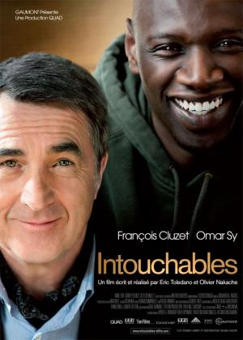
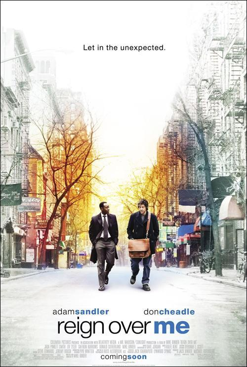

Rodrigo Cabral
Programmer
I worked for 7 years in the finance area of a mining company: Minera Alumbrera. I always wanted to learn how to code to develop my own tools for a business. In Tucumán there are many opportunities in this area. My future goal is to implement a new App in the city where I live.
See for yourselfMy favourite Movies
|  |
IntouchablesAfter a paragliding accident, Philippe, a rich aristocrat, is confined to his home. He employs Driss as home help. Driss is a young guy from the projects recently out of prison. In short, the person the least adapted for the job. Vivaldi and Earth, Wind and Fire, fine language and slang, suits and jogging outfits come together and a clash is inevitable. Two worlds collide and win each other over to give birth to a friendship as crazy, funny, and fierce as it is unexpected. A unique relationship that will make sparks fly and render Philippe and Driss untouchable. |
|  |
Reign Over MeCharlie Fineman (Sandler) is a Manhattan dentist who lost his wife and two children when their jet crashed into the World Trade Center on 9/11. One day he runs into his old college roommate (Cheadle). Rekindling the friendship is the one thing that appears able to help the man recover from his grief. |
 |
The MatrixIn the near future, Computer hacker Neo is contacted by underground freedom fighters who explain that reality as he understands it is actually a complex computer simulation called the Matrix. Created by a malevolent Artificial Intelligence, the Matrix hides the truth from humanity, allowing them to live a convincing, simulated life in 1999 while machines grow and harvest people to use as an ongoing energy source. The leader of the freedom fighters, Morpheus, believes Neo is "The One" who will lead humanity to freedom and overthrow the machines. Together with Trinity, Neo and Morpheus fight against the machine's enslavement of humanity as Neo begins to believe and accept his role as "The One". |
About this page
This page has been coded during the FullStack program @LeWagon. That was probably the best experience of my entire life.